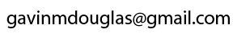

Left: UNB, Fredericton campus across the Saint John river (copyright UNB). Right: Location of Fredericton (copyright Encyclopedia Britannica).
Principal Investigator: Gavin Douglas
I am seeking MSc and PhD students interested in joining my new group in the Biology Department (UNB, Fredericton campus). The earliest start date is September, 2025.
My lab will use primarily bioinformatics approaches to explore the evolutionary factors driving pangenome evolution in prokaryotes. This will build upon my recent work using pseudogenes as a neutral reference to investigate how rare genes evolve. A key question I am excited to explore is how to best estimate effective population size from microbial phylogenomic data to better inform such investigations.
We will also be working with collaborators to better understand the factors driving strain variation across a range of environmental samples (including ocean and lake water samples, as well as honey bee gut microbiome samples).
Last, we will develop bioinformatic tools to better identify putatively adaptive accessory genes, and to aid microbial ecology analyses more generally. We will especially focus on developing approaches that incorporate genomes (both high-quality reference and metagenome-assembled genomes) in metagenomics analyses.
Please note that I do not have funding specifically support postdoctoral researchers at the moment, but I would be happy to collaborate on Postdoctoral Fellowship applications.
Please feel free to contact me at:
This site is under construction. For information on my background and publication history please see my personal website.